Totale oppervlakte: 2.381.741 km²
Een gedetailleerd overzicht van de landoppervlakte en geografische verdeling van het grootste land van Afrika

.svg)
Algerije is het grootste land van Afrika en het tiende grootste land ter wereld met een totale oppervlakte van 2.381.741 km². Het land wordt gekenmerkt door een enorme diversiteit in landschappen, van de vruchtbare kuststrook langs de Middellandse Zee tot de uitgestrekte Sahara-woestijn die meer dan 80% van het land beslaat.
De geografische samenstelling van Algerije is uniek en fascinerend, met verschillende klimaatzones en ecosystemen die variëren van mediterrane kustgebieden tot extreme woestijnomgevingen.
Geografische samenstelling van Algerije per categorie
Type Landoppervlakte
Oppervlakte (km²)
Percentage (%)
Visueel

Zand- en rotswoestijn
1.905.393
80.0%
.svg)
Akkerland en weilanden
190.540
8.0%

Bossen en struikgewas
119.087
5.0%

Atlas gebergte en rotsen
95.270
4.0%

Steden en dorpen
47.635
2.0%

Zand- en rotswoestijn
23.817
1.0%
2.381.741
100.0%
.svg)
Met 80% woestijngebied is de Sahara het meest dominante landschap in Algerije en beïnvloedt het klimaat en de leefomstandigheden sterk.
.svg)
Slechts 8% van het land is geschikt voor landbouw, voornamelijk geconcentreerd in de noordelijke kustgebieden met mediterraan klimaat.
.svg)
Met slechts 1% waterlichamen is Algerije een van de droogste landen ter wereld, wat waterbeheer tot een kritieke uitdaging maakt.
.svg)
Algerije is het grootste land van Afrika en het 10e grootste ter wereld
De Sahara-woestijn in Algerije bevat enkele van de hoogste temperaturen ooit gemeten op aarde
Het Atlas-gebergte scheidt de kuststreek van de Sahara en bereikt hoogtes tot 2.300 meter
Ondanks de grote oppervlakte woont 90% van de bevolking in de noordelijke 12% van het land